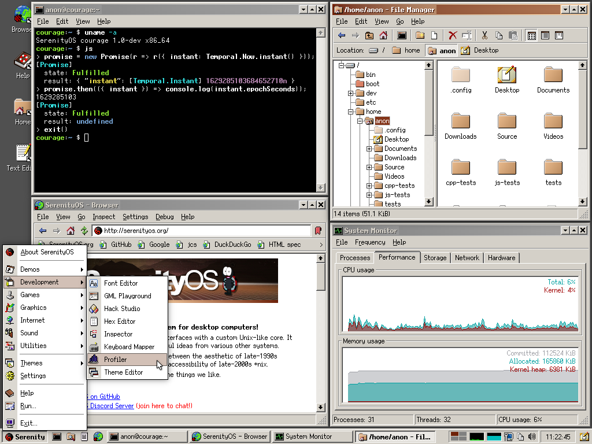

SerenityOS is a love letter to '90s user interfaces with a custom Unix-like core. It flatters with sincerity by stealing beautiful ideas from various other systems.
Roughly speaking, the goal is a marriage between the aesthetic of late-1990s productivity software and the power-user accessibility of late-2000s *nix.
This is a system by us, for us, based on the things we like.
Project:
Birthday posts:
Screenshot:
